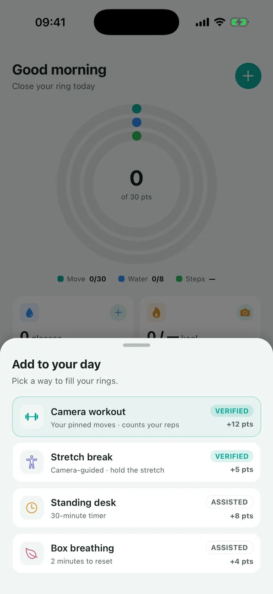
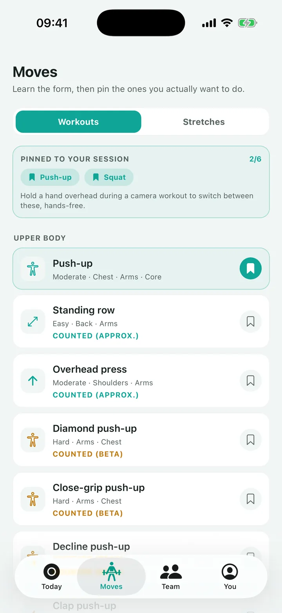
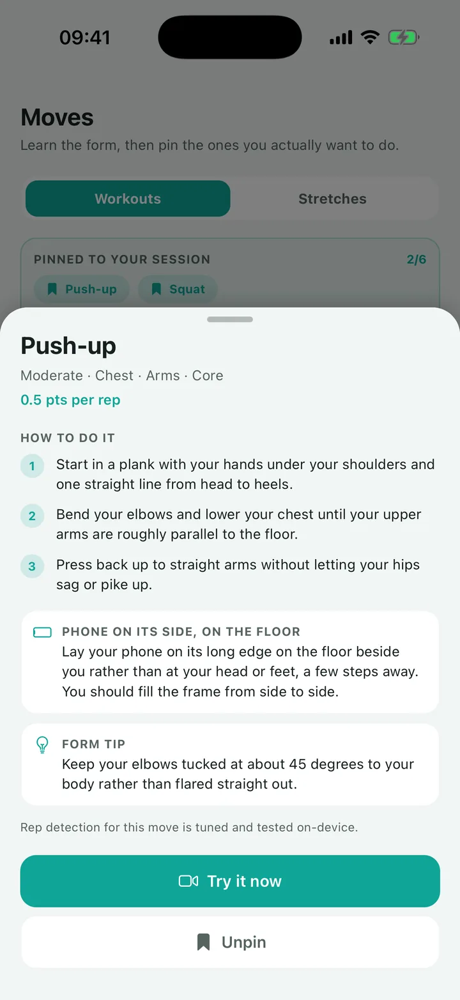

Screen work prevention
Nearly half your desk staff already have neck or shoulder pain.
Six hours a day at a screen is now normal, and 13 percent of work related absence days come from it. Cadence puts short, camera verified movement into the working day, in an app that carries your name. You see who actually did it.
On device pose tracking. Zero camera frames leave the phone.
of workers spend six or more hours a day at a screen
of those report neck, shoulder, wrist or arm complaints
of work related absence days come from long screen work
euro, the average wage cost of one work related absence day
Sources: TNO factsheets on physical load, December 2025, and TNO Arbobalans 2024. See the full list.
The problem
A good chair does not help when the breaks never happen.
Sickness absence in the Netherlands reached 5.8 percent in the first quarter of 2026, the highest in thirty years. Developers, lawyers, accountants and policy staff sit at a screen for six hours or more, and the advice they are given, change posture, take breaks, stand, stretch, is exactly the advice that gets skipped on a busy day. Cadence makes the break short enough to take and verifies that it happened.
The camera does the counting
Point the phone, do the stretch. Cadence reads body position 30 times a second and credits the hold only when the movement passes through the full range. A half squat does not score. Nobody is asked to be honest about it, which matters because you are the one defending the participation figure.
And it never sees anything
The pose model runs on the phone itself. No frame is uploaded, stored, or shown to anyone. Your works council reviews an app that reports a rep count, not an app that watches employees.
Thirty points a day, closed by real movement. Counted by the phone, never by the honour system.
Verification
Every point on the ring carries a trust tier.
The tier is stored with the point, not decided in the interface. That is what keeps a team challenge honest and what makes the participation number hold up when someone asks how you know.
Proven by a machine
Camera counted reps and stretch holds. Steps, stand hours, and mindful minutes read from Apple Health or Android Health Connect.
Can close the ring on its own
Proven by a timer
Standing desk sessions, guided breathing, and eye breaks, measured by a timer that has to actually run while the person is doing it.
Can close the ring on its own
Taken on trust, and capped
Took the stairs. Walked to lunch. Useful as an on ramp for someone who is not ready to point a camera at themselves yet.
Capped at roughly 40 percent of the daily goal
How it works
Three steps, and one of them is yours.
Step 01
You pick the tasks
Choose which inputs count for your workforce, set the daily goal, and set what each task is worth. A software firm and a warehouse do not need the same menu.
Step 02
Your people close one ring
One target a day, fed by moving, taking a break, and recovering. It closes with a camera set, a standing session, or a walk. Streaks and team challenges carry it past week two.
Step 03
You read participation
Aggregate ring closes and streak rates, anonymised. You never see an individual's health data, and the app is built so that you cannot.
Per company builds
Tune the ring to the way your people actually work.
Cadence carries your name, your palette and your logo, and the task menu is configuration rather than a feature request. These are starting points for the desk heavy sectors where screen time is highest, and every one of them is editable.
Software and IT
- Neck and shoulder holds
- Eye breaks on a timer
- Standing desk sessions
- Camera workouts
Finance and legal
- Wrist and forearm holds
- Desk stretch breaks
- Box breathing
- Stand and move hours
Public sector
- Micro breaks between meetings
- Chest opener and side bend
- Walking meetings
- Screen off lunch
Hybrid teams
- Steps from a watch
- Walking meetings
- Camera workouts at home
- Team challenges
Why HR teams pick it
What you get that a benefits portal cannot give you.
Participation you can defend
Report a figure where the machine verified share is separated from the self reported share, because the tier travels with the point.
Everyone can close it
46 moves in the library, plus timers, breathing, and watch data. Someone who will never squat beside their desk still closes their ring.
Privacy that survives review
Pose runs on the device. Frames are never written to disk or sent anywhere. Bring it to your works council with a straight answer.
Your database, your region
One project per company. No shared table holding another employer's rows beside yours, and deletion means dropping a project.
A build, not a feature request
Your name, palette, logo, task menu, goal, and language set are configuration. Reskinning a company is a single file swap on our side.
Teams, not a public leaderboard
Department against department, on aggregate ring closes. No global ranking that puts one employee's numbers next to another's.
Arbo and tax
Name it in your RI&E and it stops being a perk.
A general vitality app is a staff benefit, so it comes out of your vrije ruimte under the werkkostenregeling. A measure that addresses an identified work risk is a different thing. If Cadence is named in your RI&E as a measure against screen work and the complaints that follow it, it can qualify as a gerichte arbovoorziening, which you provide untaxed and outside that free space.
RI&E wording
Draft text your preventiemedewerker can put straight into the risk inventory, tied to the screen work section of the arbocatalogus.
A page for the works council
One page on what the camera does and does not do, written to be read by an ondernemingsraad rather than by an engineer.
Processing agreement
A verwerkersovereenkomst ready to sign, plus the data map showing that no camera frame is ever a record we hold.
This is how the arrangement is meant to work, not tax advice. Whether a specific deployment qualifies depends on your RI&E and how the app is used, so confirm the treatment with your own adviser before you budget for it.
Inside the app
What your people actually open.
Real screens, not mockups. Note what each one shows a buyer: the points a task is worth, the tier behind it, and where the phone has to sit for the count to work.



Pricing
Per employee, per month, tiered by company size.
Every tier includes a setup fee and a minimum annual commitment, because each client gets its own build, its own signing identity, and its own database. We quote on headcount and the tier you need.
Starter
Small teams getting off a spreadsheet
- The daily ring and streaks
- Camera workouts and stretch holds
- Your branding and your build
- Email and domain login
Business
The common shape, 200 to 2000 people
- Everything in Starter
- Team challenges
- Apple Health and Health Connect
- Custom task menu and goal
Enterprise
2000 and up, or a compliance team
- Everything in Business
- SSO and your identity provider
- Data residency of your choice
- Admin dashboard and named support
Questions
The ten things every buyer asks us.
Does the camera record or upload video?
No. Pose estimation runs on the phone. No frame is uploaded, stored, or transmitted, and nobody at Cadence or at your company can see a camera feed. Only the derived result, meaning reps counted and points earned, ever leaves the device.
Can employees close the ring without ever using the camera?
Yes, and that is the design. Standing timers, guided breathing, steps, stand hours, and mindful minutes from Apple Health or Health Connect all feed the same ring. The camera is the highest value path, never the only one. Participation is the number you buy on, so the ring has to be closeable by everyone.
What does HR actually see?
Aggregate participation only. Ring closes, streak rates, and team challenge totals, anonymised. Cadence does not expose individual health data, individual workout logs, or camera derived form data to an employer.
How do you stop people from gaming the ring?
Every input carries a trust tier. Machine verified and timer assisted inputs can close the ring on their own. Honour system check offs are capped at roughly 40 percent of the daily goal, so a participation number can never be made of check boxes alone. The cap is enforced where the points are awarded, not in the interface.
How does the app reach our employees?
They install Cadence and sign in with your company domain, and from the first screen it carries your name, your logo and your colours. That branding is standard and it is what your people see every day. A separate store listing under your own company name is a paid upgrade rather than the default, because shipping near identical apps to the public App Store runs into Apple's rules on duplicate apps. Where a private listing is genuinely needed we use Apple Business Manager and the managed equivalent on Play, which needs an account on your side.
We already have a wellbeing platform. Why add this?
Most of them solve a different problem. Mental health services, gym networks and benefits portals all sit next to Cadence rather than on top of it, and none of them address the neck and shoulder complaints that come from screen work. If you already run one, the honest test is whether anything in your current stack gets someone out of their chair during the working day and can show you that it happened. Adding a fourth app nobody opens helps nobody, which is why the whole design is short sessions, your branding, and verification.
Is this an arbo measure or a staff benefit?
It is built to be an arbo measure. Named in your RI&E as a measure against screen work and the complaints that follow it, it can qualify as a gerichte arbovoorziening under the werkkostenregeling, which means you provide it untaxed rather than out of your vrije ruimte. We supply the RI&E wording, the works council page and the processing agreement. Confirm the tax treatment with your own adviser, because it depends on your risk inventory and on how the app is used.
Where does our data live?
In your own database, in a region you pick. Cadence runs one project per company rather than a shared multi tenant database, so there is no shared table holding another employer's rows next to yours.
Which languages are included?
The base package ships English. Every additional language is a paid add on, enabled per company. A company that buys one language never sees a language switcher in the app.
What happens to our data if we leave?
You get a full export and we delete the project. Because the database is yours alone, deletion is dropping one project rather than filtering rows out of a shared table.
See a ring close, verified, in about fifteen minutes.
We walk one camera set live, show you what the trust tiers do to a participation figure, and answer the privacy question properly. Tell us your headcount and we will send a quote after.
No platform fee to evaluate. We build a branded pilot for one department before you commit to a headcount.
Sources
Every number on this page, and where it came from.
- 45 percent at six or more hours of screen work, and 45 percent of those reporting neck, shoulder, wrist or arm complaints. 13 percent of work related absence days. TNO, three factsheets on physical load, 11 December 2025. tno.nl
- 299 euro average wage continuation per work related absence day. TNO Arbobalans 2024, figure for 2023. Employer surveys put the total cost per absence day higher once cover and lost output are counted.
- 5.8 percent sickness absence in the first quarter of 2026, the highest in thirty years. CBS, June 2026. cbs.nl
- 34 workout moves, 12 stretch holds, three verification tiers. Counted from the Cadence move catalogue, August 2026.
Research on workplace movement shows the clearest effect on musculoskeletal pain and function. The effect on overall sickness absence is smaller and more mixed, and it depends heavily on how many people take part. That is why we ask to measure participation and complaints in a pilot before anyone puts an absence figure in a business case.